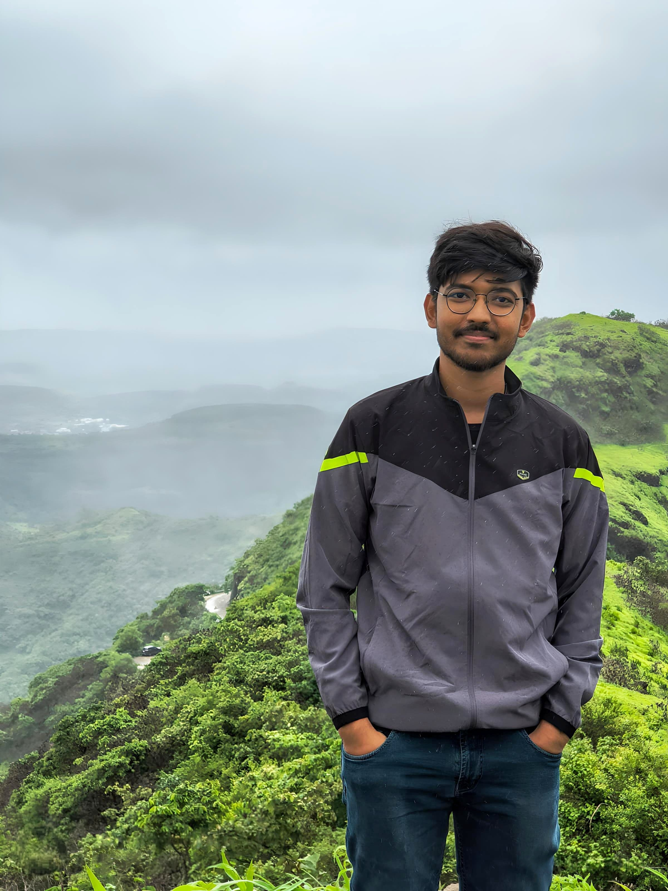

MSc in Big Data Analytics | BSc(H) in Statistics
I'm a data enthusiast with a strong foundation in statistics and machine learning. I enjoy building intuitive tools, analyzing patterns, and crafting elegant solutions through code.
Currently I am working as a Research fellow at CVIT lab, IIIT Hyderabad, under the supervision of Prof. CV Jawahar. Previously, I have worked as a Research Assistant at School of Computing and Data Sciences, FLAME University, Pune under supervision of Dr. Chiranjoy Chattopadhyay